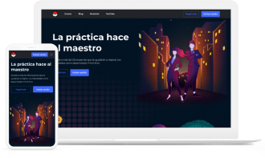

Frontend Developer que le encanta implementar diseños que inspiran y atraen a las personas
A lo largo de mi carrera como Frontend, he tenido el privilegio de trabajar en proyectos retadores e increíbles
Aqui hay algunos que me gustaria compartir

LeonidasEsteban
Accede a más de 120 proyectos que te ayudarán a mejorar tus habilidades como desarrollador Front-End.
Ver Codigo Ver ProyectoAccede a más de 120 proyectos que te ayudarán a mejorar tus habilidades como desarrollador Front-End.
Ver Codigo Ver Proyecto
LeonidasEsteban
Accede a más de 120 proyectos que te ayudarán a mejorar tus habilidades como desarrollador Front-End.
Ver Codigo Ver Proyecto